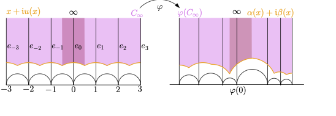
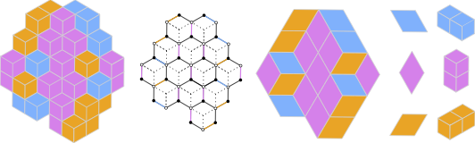
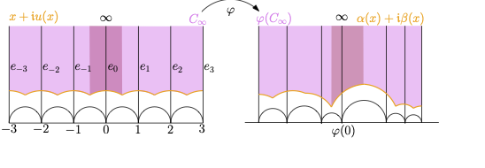
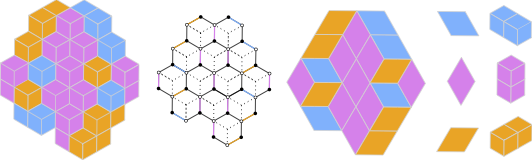
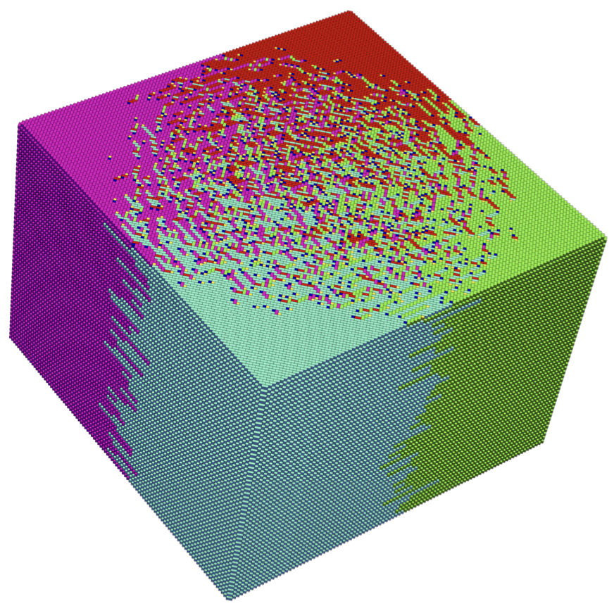
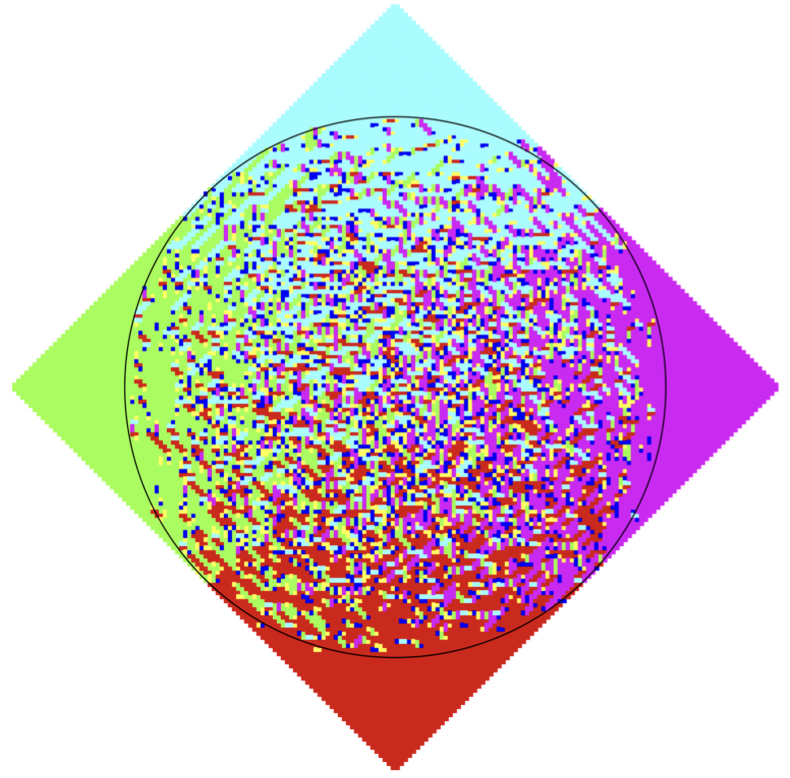
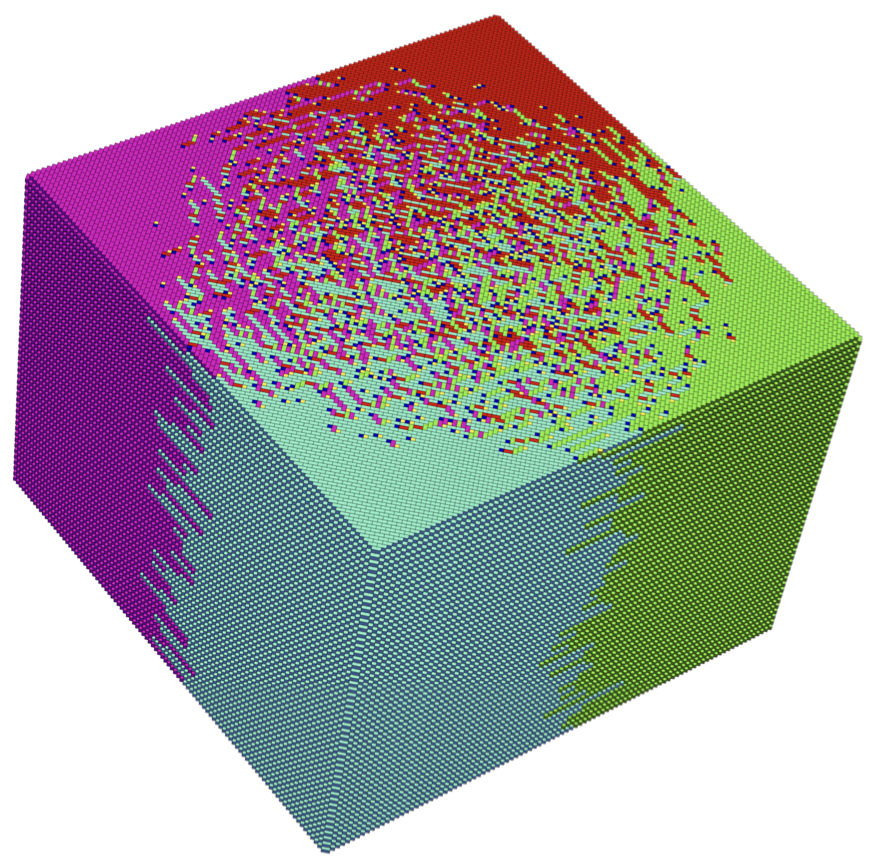
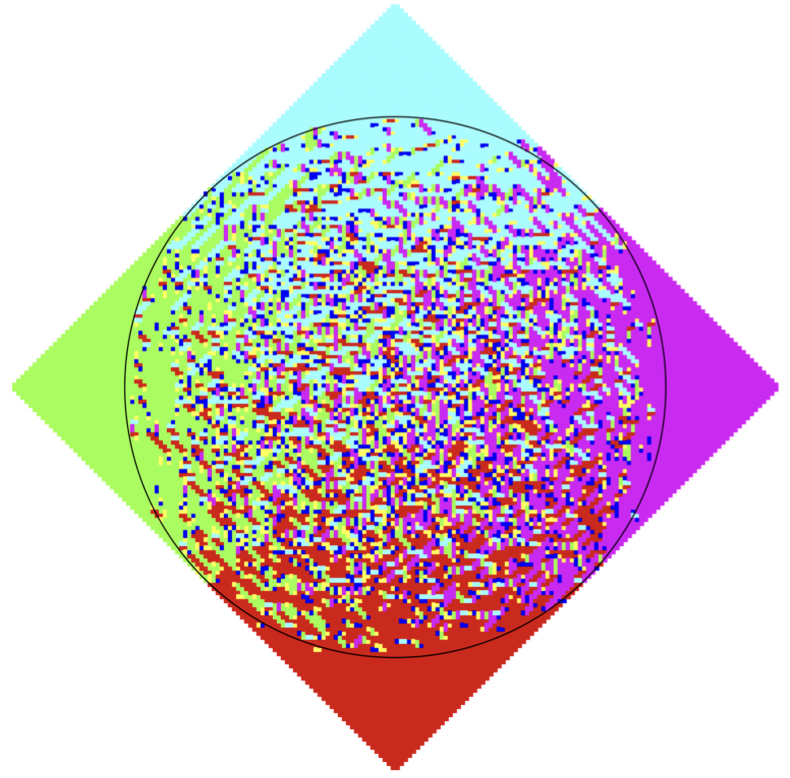

Catherine Wolfram
I am an NSF postdoctoral fellow and Gibbs Assistant Professor at Yale University. In May 2024 I graduated from MIT with a PhD in math, advised by Scott Sheffield. Before that, I was an undergraduate at the University of Chicago. I'm interested in various topics related to complex analysis, probability, and geometry. More information can be found in my CV [here.
My email address is: catherine.wolfram at yale dot edu. (Note: after January 2025, I will not receive emails sent to my old MIT address.)

  
    
 